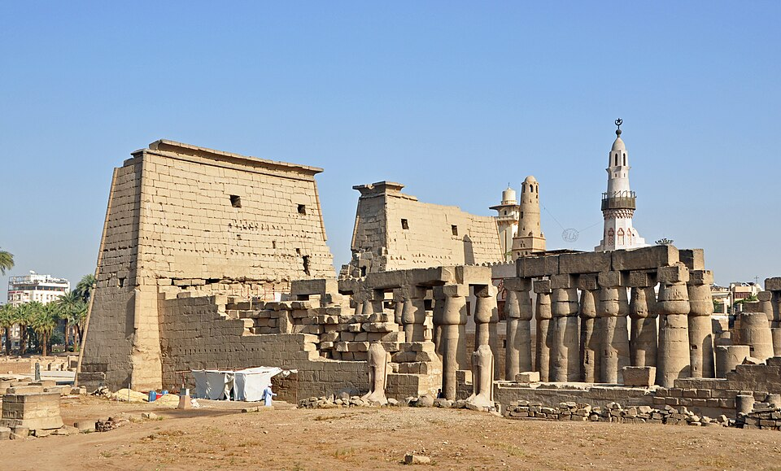
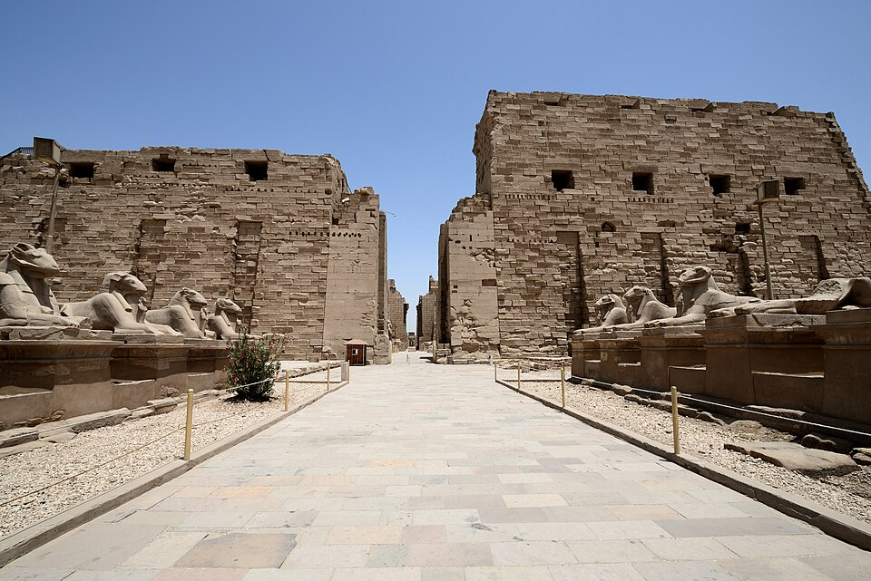
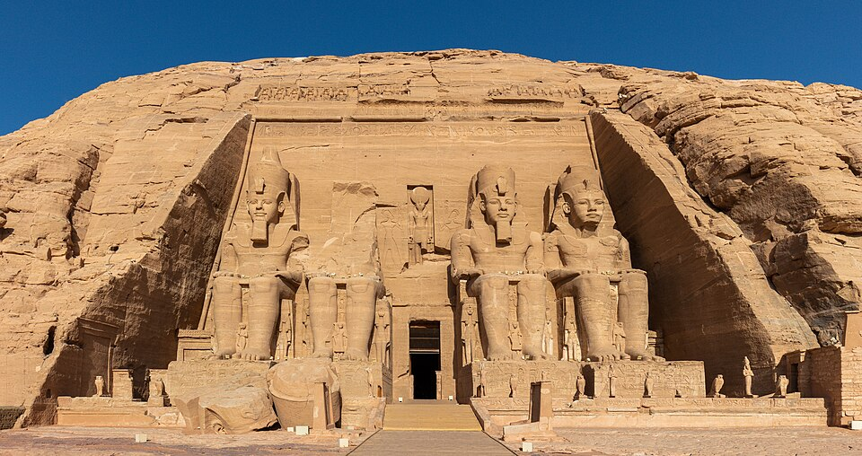

吉薩金字塔群
胡夫、卡夫拉同孟卡拉三座金字塔，加上人面獅身像。
- 歷史文化
- 建於古王國時期，約四千五百年前，係古代世界七大奇蹟中至今仍然存在嘅一個。
- 交通
- 開羅市區乘網約車或包車，約40分鐘。
- 貼士
- 清晨入場避熱避人；入內部金字塔通常要另外買票。
主頁 ／ 埃及
尼羅河畔嘅古文明
埃及係古文明嘅代名詞：吉薩金字塔、人面獅身像、路克索神廟同帝王谷。尼羅河游輪帶你沿岸睇盡數千年歷史。
法老建造金字塔，其中胡夫金字塔曾是世界最高建築逾3800年。
1799年出土嘅羅塞塔石碑，令學者在1822年成功破解象形文字。
1922年霍華德·卡特發現圖坦卡門陵墓，震驚世界，亦掀起古埃及熱潮。
揀一個月份，睇吓適唔適合去。
開羅國際機場有計程車同網約車入市區；城際可坐國內航班、臥鋪火車去路克索同亞斯文。景點之間建議包車或參加有導遊嘅行程。
胡夫、卡夫拉同孟卡拉三座金字塔，加上人面獅身像。

相片未能載入，按此喺 Wikimedia Commons 搜尋位於尼羅河東岸、市中心內嘅古代神廟，夜景特別靚。

相片未能載入，按此喺 Wikimedia Commons 搜尋規模龐大嘅神廟群，大柱廳有134根巨柱。

相片未能載入，按此喺 Wikimedia Commons 搜尋拉美西斯二世鑿入岩壁嘅巨型神廟，門前有四尊坐像。